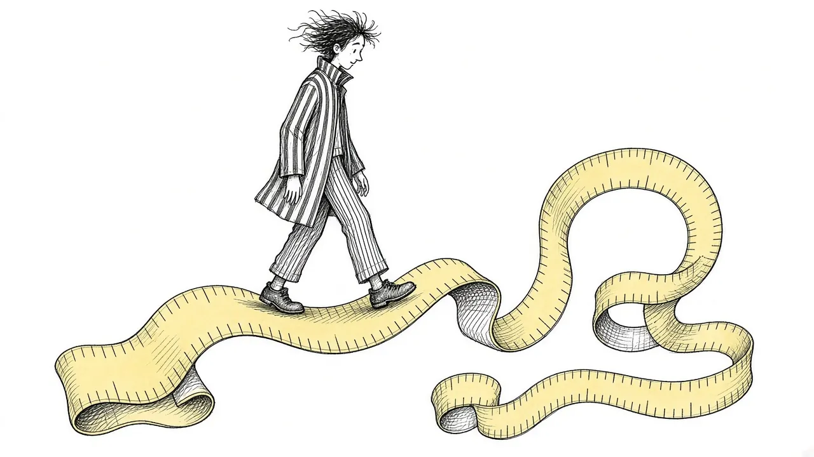

How Long Does Grief Last? An Honest Timeline

How long does grief last? It is one of the most searched questions about loss, and one of the hardest to answer. People want a number. Six months? A year? Two? Having a number would make the pain easier to plan around.
The honest answer is that grief does not follow a timeline. But that does not mean there is nothing useful to say. This guide offers an honest look at how grief tends to unfold over time, why there is no deadline, and what to expect along the way.
Why there is no single answer
Grief is shaped by many factors:
- Who you lost. A partner, child, parent, sibling, friend, or pet.
- How they died. Suddenly, after a long illness, by suicide, or in traumatic circumstances.
- Your relationship. Close, complicated, dependent, distant, or unresolved.
- Your support. Whether you have people who understand and show up.
- Other stressors. Money, health, work, caregiving, or other losses.
- Your history. Past losses, mental health, and how you learned to handle pain.
- Your culture and beliefs. Traditions and expectations around grief.
Because all of these are different for everyone, grief unfolds differently too.
Grief does not keep a calendar. It keeps the shape of the love you had.
What the early months often look like
In the first weeks and months, many people experience acute grief. This can include shock, numbness, intense sadness, disbelief, difficulty sleeping or eating, and trouble concentrating. Days may blur together. Practical tasks may feel overwhelming.
For some people, this period is filled with activity: planning a funeral, handling paperwork, receiving visitors. Others find it quiet and lonely. Both are common.
The first year
The first year after a loss often brings a series of firsts: the first birthday, first holidays, first anniversary of the death. Each can bring a strong wave of grief. Many people find themselves bracing for these days.
Throughout the year, grief often comes in waves. Some days feel more manageable. Others feel as raw as the beginning. See Grief Waves.
The second year and beyond
Many people are surprised that the second year can be just as hard, or harder, than the first. The shock has worn off. Support may have faded. The permanence of the loss can feel more real. Read Why Grief Can Feel Worse in the Second Year.
Beyond the second year, many people notice that grief gradually becomes more integrated. It is still there, but it takes up less of every day. There is more room for other parts of life.
Grief over a lifetime
For many people, grief never fully ends. It changes shape. It may rise up at weddings, graduations, the birth of a child, or the anniversary of the death, even decades later. A song or smell can bring the person rushing back.
This lifelong grief is not a problem. It is a sign of a lasting bond. Many people describe it as carrying the person with them. See Continuing Bonds.
Signs grief is integrating
Rather than looking for an end date, it can be more helpful to notice signs that grief is becoming part of your life in a livable way. These might include:
- Being able to think about the person without overwhelming pain
- Feeling warmth or gratitude alongside sadness
- Engaging in activities and relationships again
- Making plans for the future
- Finding ways to honor or stay connected to the person
- Experiencing waves that pass more quickly
These signs often appear gradually and inconsistently. Having one good week and one hard week is normal.
When grief does not seem to change
Sometimes grief remains intense and disabling for a long time without softening. This may be prolonged grief, a condition that can be helped with specialized support. Signs include:
- Intense longing for the person most days, long after the loss
- Difficulty accepting the death
- Feeling that life has no meaning without them
- Being unable to engage in daily life
If this sounds familiar, consider speaking with a grief counselor. See Is It Grief or Something More?.
Why pressure to be done can hurt
Many grieving people feel pressure to be over it. Workplaces may offer only a few days of leave. Friends may stop asking. Family members may expect you to move on by a certain date.
That pressure can lead people to hide grief or judge themselves for still feeling it. In reality, still grieving after a year, or five, or ten, is not a sign of failure. It is a sign that someone mattered.
Questions people ask about timing
Should I be over it by now?
There is no "should." If grief is still with you, it is still with you. What matters more is whether you are able to live alongside it.
Why do I feel worse now than right after?
Shock often cushions early grief. As it wears off, the pain can feel sharper. This is common and does not mean you are going backward.
Will anniversaries always be hard?
Many people find anniversaries stay meaningful, and some find them hard for years. Over time, they often become days of remembrance as much as days of pain.
What helps along the way
- Letting yourself grieve rather than racing a timeline
- Marking important dates in ways that feel meaningful
- Staying connected to the person through memories and rituals
- Keeping support close, especially as others move on
- Caring for your body and basic routines
- Seeking professional help if grief feels stuck
If you are struggling right now
If grief feels unbearable at any point, no matter how long it has been, please reach out. If you are having thoughts of ending your life, call or text 988 to reach the Suicide and Crisis Lifeline. Someone is available any time.
How others can respect your timeline
If people around you seem impatient, it may help to tell them plainly what you need. You might say, "I am still grieving, and I probably will be for a long time. It helps when you mention them," or "Please do not expect me to be back to normal by a certain date." Most people simply do not know how long grief lasts. A gentle explanation can turn pressure into patience.
Measuring time differently
Instead of asking how long grief will last, some people find it more useful to ask how grief is changing. Every few months, you might check in with a few gentle questions.
- Am I able to do more of my daily life than before?
- Do I have moments of rest from the pain, even short ones?
- Can I think about them without being completely overwhelmed?
- Am I reaching out to people, or pulling further away?
If your answers are slowly shifting, even if the grief is still strong, that suggests it is moving. If nothing has changed for a long time, or things are getting steadily heavier, that is a good reason to look for more support. Time matters, but direction often matters more.
A gentle answer
How long does grief last? As long as it needs to. For most people, the sharpest pain softens with time, and life gradually grows around the loss. But the love does not end, and some form of grief often stays with you. That is not a sign that you are stuck. It is a sign that the person you lost will always be part of your story.
This article is for general information and support. It is not medical or mental health advice. If grief has become unbearable or you are thinking about harming yourself, call or text 988 right now.
Related reading

Grief Alongside Depression and Anxiety
Grief often arrives alongside other mental health challenges. How to recognize overlap and get support for all of it.

Why Your Brain Keeps Replaying Their Last Days
Memories of the final days or moments can loop relentlessly. Here is why that happens and how to let the rest of their life back in.

Rumination in Grief: Getting Off the "What If" Wheel
Endless what-ifs and if-onlys can trap grieving people. Learn why rumination happens and gentle ways to step off the wheel.